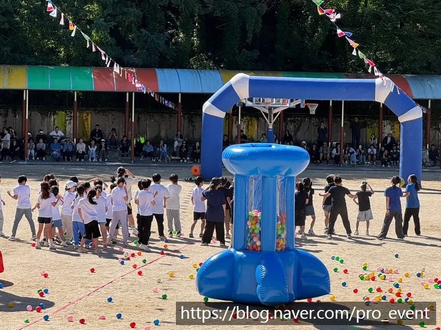
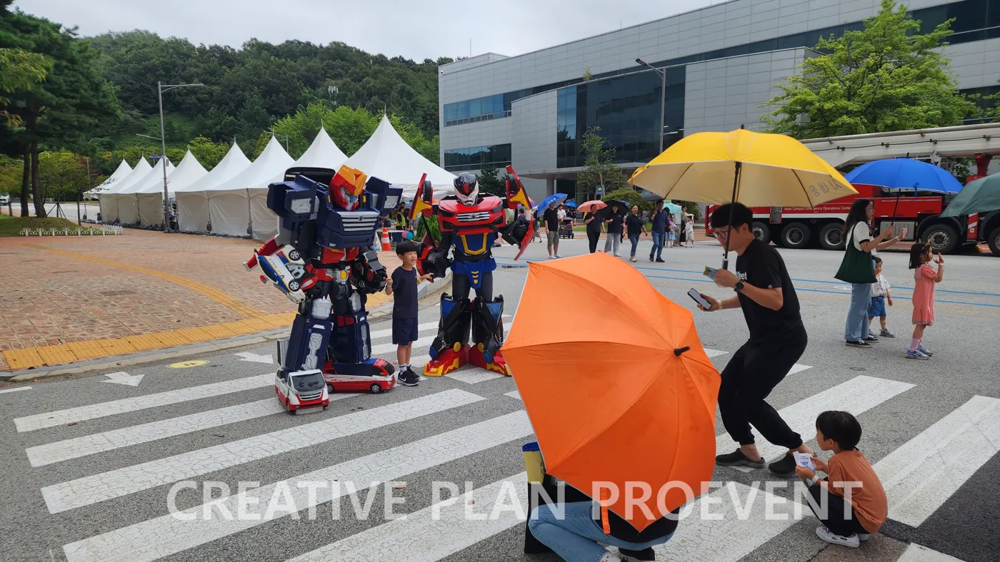
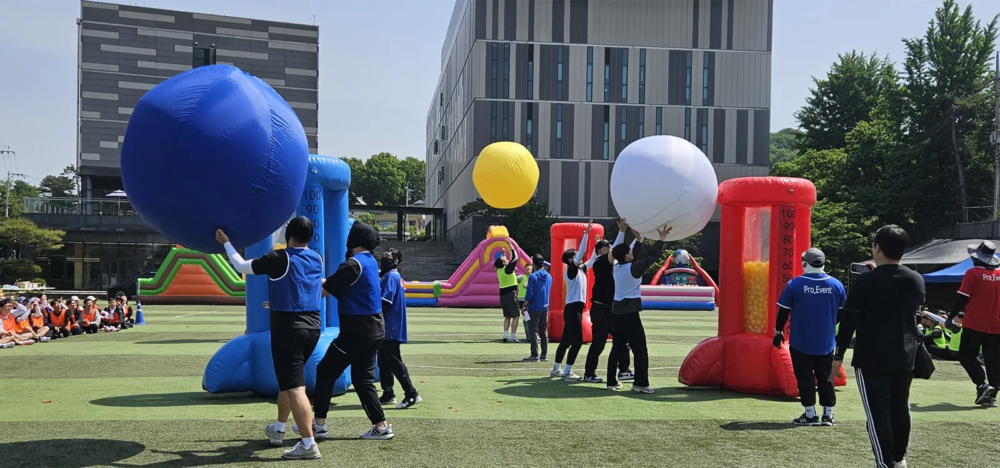

양천 어린이 행사 대행에서 가장 먼저 정할 것은 아이들의 나이와 행사 길이입니다. 어린 아이일수록 한 순서를 오래 버티지 못하고, 행사가 길어지면 보호자도 지칩니다. 프로이벤트는 양천구 어린이집 한마당 (2014)을 맡았고, 홈페이지 고객 목록(TRUSTED BY)에 양천구가 올라 있습니다. 서울 본사에서 양천구청까지는 차로 약 20분 · 18.8km 입니다. 이 글은 한마당 · 가족행사를 처음 맡은 선생님이 순서대로 챙길 것을 정리했습니다.

- 어린이 행사는 나이에 맞춰 순서를 짧게(10~20분) 끊고, 전체는 2~3시간 안에 끝냅니다.
- 보호자와 아이가 함께하는 순서를 중간에 넣으면 보호자도 구경꾼이 아니라 참가자가 됩니다.
- 놀이 구역은 나이대별로 나누고, 기구마다 지켜보는 어른을 둡니다.
- 그늘 · 물 · 화장실 동선과 미아 안내 방법을 행사 전에 정합니다.
1. 양천 어린이 행사 대행, 나이와 길이부터
같은 「어린이 행사」라도 영아반과 7세반, 초등 저학년이 할 수 있는 것은 전혀 다릅니다. 참가 아이들의 나이대를 먼저 나누고, 나이대별로 무엇을 할 수 있는지 정한 뒤 전체 시간을 잡습니다. 순서 하나는 10~20분 안에서 끊는 것이 기본입니다.
| 나이대 | 잘 맞는 순서 | 피할 것 |
|---|---|---|
| 영아 · 3~4세 | 보호자와 함께 걷기 · 공 굴리기 · 율동 | 줄 서서 오래 기다리기 |
| 5~7세 | 팀 게임 · 공 넣기 · 짧은 경주 | 규칙이 긴 게임 |
| 초등 저학년 | 팀 대항 · 미션 · 놀이 기구 | 시간이 긴 단체 게임 |
| 보호자 | 아이와 함께 하는 경기 · 응원 | 보호자만 하는 긴 경기 |
2. 한마당 · 가족행사 순서 예시
아래는 오전 행사의 예시입니다. 몸을 쓰는 순서와 앉아서 보는 순서를 번갈아 배치하고, 마지막은 모두가 함께하는 순서로 끝냅니다. 레크리에이션 강사가 순서 사이를 이어 주면 기다리는 시간이 놀이가 됩니다.
| 시간 | 순서 | 준비할 것 |
|---|---|---|
| 09:30 | 도착 · 이름표 · 놀이 구역 자유 이용 | 이름표, 안내 데스크 |
| 10:00 | 여는 순서 · 다 같이 율동 | 음향, 율동 음악 |
| 10:20 | 나이대별 게임 | 게임도구, 반별 구역 표시 |
| 11:00 | 축하 공연 · 레크리에이션 | 무대 자리, 무선 마이크 |
| 11:30 | 보호자와 함께하는 경기 | 경기 도구, 안전 요원 |
| 12:00 | 다 같이 마무리 · 선물 · 사진 | 선물 배부 동선, 단체 사진 자리 |

3. 놀이 구역은 나이대별로 나눕니다
에어바운스 같은 놀이 기구는 어린이 행사의 인기 순서지만, 큰 아이와 작은 아이가 한 기구에 섞이면 다치기 쉽습니다. 기구를 나이대별로 나누고, 기구마다 지켜보는 어른을 둡니다. 신발 벗는 자리와 대기 줄도 함께 정합니다.
- 작은 아이용 기구와 큰 아이용 기구를 떨어뜨려 놓습니다.
- 한 번에 들어가는 아이 수와 이용 시간을 기구 앞에 붙입니다.
- 기구 출구가 다른 기구의 대기 줄을 가로지르지 않게 배치합니다.
- 놀이 구역 옆에 보호자가 앉아 지켜볼 그늘 자리를 둡니다.

놀이존 배치와 바람 기준은 영등포 에어바운스 놀이존 글에 더 자세히 정리했습니다.
4. 그늘 · 물 · 미아 안내를 미리 정합니다
어린이 행사에서 담당자가 가장 많이 받는 부탁은 「아이를 잃어버렸어요」와 「화장실이 어디예요」입니다. 이 두 가지를 행사 전에 정리해 두면 당일이 훨씬 차분합니다.
| 준비 | 방법 |
|---|---|
| 미아 안내 | 안내 데스크를 한 곳으로 정하고 시작 때 방송으로 알림 |
| 이름표 | 아이 이름 · 반 · 보호자 연락처(보호자 동의 범위) |
| 그늘 | 천막을 보호자 자리와 대기 줄 옆에 |
| 물 · 화장실 | 위치를 안내판과 방송으로 반복 안내 |
| 구급 용품 | 안내 데스크에 두고 담당 선생님 지정 |
5. 양천 어린이 행사 준비 일정
양천(목동 · 신정동 · 신월동 · 양천구청 등)의 행사장까지 서울 본사에서 차로 약 20분 · 18.8km 입니다. 어린이집 · 유치원 행사는 가정 안내문을 보내야 하므로, 날짜와 준비물은 넉넉히 앞서 확정합니다.
- 5주 전: 날짜 · 장소 · 나이대별 인원 · 예산 범위 정리, 견적 받기.
- 4주 전: 순서 · 놀이 기구 · 공연 확정.
- 3주 전: 가정 안내문(날짜 · 복장 · 준비물 · 비 올 때 안내) 발송.
- 1주 전: 반별 구역 · 안전 담당 · 미아 안내 방법 확정.
- 당일: 설치 → 점검 → 진행 → 철수 · 사진 정리.
6. 어린이 행사 견적 항목표
자동 견적서에서 항목을 골라 보내 주시면 담당자가 확인 후 1영업일 안에 1차 제안과 견적으로 답합니다.
| 항목 | 확인할 것 |
|---|---|
| 학교행사(한마당 · 가족행사 진행) | 순서 구성 · 현장 운영 |
| 레크리에이션 강사 | 나이대 · 순서 수 |
| 에어바운스 | 나이대별 기구 · 수량 |
| 체육대회 게임도구 | 게임 종류 · 반 수 |
| 음향 (소형) | 야외 · 실내, 율동 음악 |
| 천막 | 보호자 그늘 · 안내 데스크 |
| 행사 스태프 | 놀이 기구 안전 · 안내 |
양천 지역 안내는 양천 행사 안내에 있습니다.
자주 묻는 질문
보호자가 참여하지 않는 행사도 되나요?
아이들만 참여하는 구성도 가능합니다. 그때는 반별 선생님과 안전 담당을 더 촘촘히 배치합니다.
실내 강당에서도 할 수 있나요?
강당에서는 놀이 기구 대신 율동 · 게임 · 공연 순서를 늘려 구성합니다. 바닥 보호와 천장 높이를 함께 확인합니다.
행사는 몇 시간이 적당한가요?
어린 아이가 많을수록 짧게 잡습니다. 보통 2~3시간 안에서 순서를 10~20분 단위로 끊습니다.